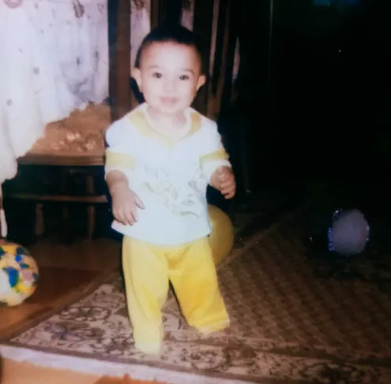

مذاكرة
LINED
ورق مسطر
مساحة نظيفة للتلخيص، الكتابة والملاحظات اليومية.
صل ع النبي وعيش ي باشا ف السايت
أدوات الطالب والمعلم، ملفات PDF، الشيتات، الامتحانات وتنظيم المذاكرة.
أدوات سريعة للتحويل، الملفات، التنظيم والحلول اليومية.
كل كلية ومعهد ليها صفحة، وكل مادة فيها شرح وملفات وملخصات.
اتعلم لغة جديدة خطوة بخطوة،
اختار القسم اللي محتاجه وابدأ شغلك
بالتوفيق يارب
قسمنا الأدوات عشان توصل للي محتاجه من أول ضغطة.
الشيتات والقوالب وتنظيف المحاضرات ومقارنة ملفات الـPDF.
استعرض الأدواتملخصات وامتحانات وتخطيط للمذاكرة والقارئ الصوتي وتلوين الـPDF.
استعرض الأدواتأدوات الـPDF وأدوات الصوت ودمج وتعديل وتحويل وحماية الملفات.
استعرض الأدواتاعرف مين الروبوت اللي بيمشي فوق الصفحة، وإزاي تسأله عن أي أداة.
اتعرف عليهكل أدوات المعلم في مكان واحد.
اكتب الأسامي والدرجات، وخد المتوسط والتقديرات وكشف الأوائل PDF أو Excel.
ارفع الأسئلة والإجابات، حدد وقت الامتحان، وانشره بلينك تبعته للطلاب.
50 قالب جاهز، خطوط جوجل، توقيعك، وشهادة لكل طالب في الفصل مرة واحدة.
صمم شيتات وأسئلة بـ استايلات مميزة مع إضافة الصور وخطوط الإجابة.
قوالب للمذاكرة والتنظيم والكتابة والطباعة مع تخصيص الـPDF.
معالجة الصور الملتقطة بالكاميرا وتبييضها.
ارفع ملفين واتفرج على الفرق بينهم صفحة بصفحة.
حدد الإجابة الصح ودرجة كل سؤال، وطلّع ملف JSON للامتحان الأونلاين وPDF للنسخة الورقية.
شوف نتائج الطلاب، الدرجات، ونِسَب النجاح وتفاصيل الأسئلة الغلط في الامتحانات اللي نشرتها.
ثيمات لراحة العين، وتظليل الكلمات المهمة.
مفيش أداة مطابقة للبحث
أدوات المذاكرة والتنظيم والمتابعة.
كل المدرسين بتوعك في مكان واحد، دور ع المدرس الي ينفع معاك , بالتوفيق.
كل المنصات التعليمية مترتبة حسب النوع والمجال وتقدر تفتحها من هنا.
شارك ملخصك مع زمايلك، أو حمّل ملخصات معتمدة من المادة.
امتحانات ومراجعات مرتبة حسب الصف ونوع الدراسة، جاهزة للمعاينة والتحميل.
اعمل جدول مذاكرة أسبوعي، رتّب المواد والمهام واطبعه كـPDF.
قسّم مذاكرتك لجلسات تركيز واستراحات مظبوطة، مع تنبيه صوتي.
دخل درجتك والمجموع الكلي واعرف نسبتك المئوية في ثانية.
آلة حاسبة علمية متقدمة للحسابات والمعادلات والدوال المثلثية والعمليات الرياضية.
اكتب أي كلمة أو نص، وخليه يترجم لك تلقائيًا مع صياغة عربية مصرية بسيطة.
أرشيف شخصي لملفاتك، منظم بالمادة والترم، محفوظ على جهازك.
اسمع ملف الـ PDF بصوت ولد أو بنت، عربي أو إنجليزي.
ثيمات لراحة العين، وتظليل الكلمات المهمة.
مفيش أداة مطابقة للبحث
اكتب كلمة أو جملة أو نص كامل، واختار اللغة اللي عايز تترجم لها. وبعدها هتلاقي الترجمة ومعاها صياغة عربية مصرية أبسط.
ملاحظة: الصياغة المصرية هنا إعادة صياغة مبسطة للنص العربي، مش ترجمة حرفية.

طالب بكلية العلوم • جامعة القاهرة
صل ع النبي.
مدرسينك المفضلين في مكان واحد — شوف المادة وادخل على منصة المدرس مباشرة.
كل المنصات التعليمية مرتبة بشكل شيك، مع بحث وفلاتر حسب نوع المنصة.
اختار القسم اللي محتاجه.
دمج واستخراج وتعديل وتحويل وحماية وعلامة مائية وكل أدوات ملفات الـPDF والصور.
أدوات للتعامل مع ملفات الصوت: تحويل MP3 وMP4 وWAV وOGG بين بعض واستخراج الصوت من الفيديو.
أدوات تفاعلية للمواد العلمية، زي رسم الدوال في الماث.
أدوات تفاعلية تساعدك تفهم المادة بالرسم والتجربة.
دمج وتعديل وتحويل وحماية ملفات الـPDF والصور.
تجميع عدة ملفات PDF في ملف واحد.
اختر صفحات معينة للاحتفاظ بها أو حذفها.
تدوير الصفحات المقلوبة، وقص الحواف السوداء.
بناء ملف من مجموعة صور، أو استخراج الصور.
تحويل كل صفحة من PDF إلى صفحة كاملة داخل ملف Word بنفس شكلها.
استخراج النص من الملفات، أو تحويل النص لـ PDF.
أضف نصاً شفافاً لحماية حقوق ملفاتك الخاصة.
اسحب وأفلت لترتيب صفحات الملف الواحد وحفظه.
أضف كلمة مرور تشفير حقيقية لطلبها عند فتح الملف.
مفيش أداة مطابقة للبحث
أدوات التعامل مع ملفات الصوت.
حوّل أي ملف صوت لفيديو بصورة غلاف أو خلفية ملونة وبارات صوتية متحركة.
استخرج الصوت من أي فيديو واحفظه MP3 بالجودة اللي تختارها.
حوّل الـMP3 لملف WAV غير مضغوط بجودة 16 أو 24 بت، وغيّر معدل العينات والقنوات.
صغّر حجم ملفات الـWAV وحوّلها MP3 بالجودة اللي تختارها.
حوّل الـMP3 لملف OGG بجودة أعلى وحجم أصغر، واختار الجودة والقنوات.
حوّل ملفات الـOGG لـMP3 يشتغل على أي جهاز بالجودة اللي تختارها.
مفيش أداة مطابقة للبحث
استخرج الصوت من أي فيديو في ثواني. التحويل كله على جهازك ومفيش حاجة بتتبعت لأي سيرفر.
MP4 · MOV · WEBM · MKV
حوّل أي ملف صوت لفيديو جاهز للرفع. التحويل كله على جهازك ومفيش حاجة بتتبعت لأي سيرفر.
MP3 · WAV · M4A · OGG
المتصفح ده مابيدعمش تسجيل MP4 مباشرة، فالملف طلع WebM. جرّب Chrome أو Edge الحديثين لو عايز MP4.
تحميل الفيديوحوّل الـMP3 لملف WAV غير مضغوط بجودة عالية. التحويل كله على جهازك ومفيش حاجة بتتبعت لأي سيرفر.
MP3 · M4A · OGG · FLAC · WAV
صغّر حجم ملفات الـWAV وحوّلها MP3 بالجودة اللي تختارها. التحويل كله على جهازك ومفيش حاجة بتتبعت لأي سيرفر.
WAV · FLAC · OGG · M4A
الـMP3 بيضغط الصوت بفقد بسيط في الجودة، اختار 192 أو 320 للجودة الأعلى.
تحميل الـMP3حوّل الـMP3 لملف OGG بجودة أعلى وحجم أصغر. التحويل كله على جهازك ومفيش حاجة بتتبعت لأي سيرفر.
اضغط لاختيار الـMP3 أو اسحبه هنا
ملاحظة: الناتج OGG بترميز Opus، ومعظم المتصفحات والمشغلات الحديثة بتشغله.
تحميل الـOGGحوّل ملفات الـOGG (Vorbis أو Opus) لـMP3 يشتغل على أي جهاز. التحويل كله على جهازك ومفيش حاجة بتتبعت لأي سيرفر.
اضغط لاختيار الـOGG أو اسحبه هنا
الـMP3 بيضغط الصوت بفقد بسيط في الجودة، اختار 192 أو 320 للجودة الأعلى.
تحميل الـMP3الأداة الأهم والمفضلة للطلاب.. حول ملفاتك لثيمات مريحة للعين (الوضع الليلي، سيبيا) مع إمكانية تظليل النصوص المهمة وحفظ الملف.
أكثر من ثيم جاهز للمذاكرة لساعات طويلة بدون إرهاق لعينيك.
اضغط مرتين (Double Click) على أي كلمة لتظليلها باللون اللي تحبه.
حول الخلفيات الملونة لأبيض وأسود عشان توفر حبر الطباعة.
أو اسحب وأسقط الملف هنا مباشرة للبدء
إزالة ظلال الكاميرا وتوضيح الكلام المكتوب.
تحويل للونين الأبيض والأسود لتوفير حبر الطباعة.
استخدم فلتر السيبيا لتقليل الإجهاد البصري للمذاكرة.
قلل حجم الملف عبر إعادة تصيير الصفحات بجودة قابلة للتحكم، مع موازنة الحجم والوضوح.
أو اسحب وأسقط الملف مباشرة هنا
ملفاتك تتم معالجتها داخل متصفحك ولا يتم رفعها لأي سيرفر خارجي.
معالجة الملفات في ثوانٍ معدودة مهما كان حجمها.
بدون حدود لعدد الملفات وبدون تسجيل حساب.
اجمع عدة ملفات PDF في ملف واحد بسهولة، مع إمكانية ترتيب الملفات ومعاينتها قبل الدمج النهائي.
يمكنك اختيار أكثر من ملف في نفس الوقت (PC, Mobile, iPad)
تحكم كامل في ترتيب الملفات وصعودها ونزولها قبل الدمج.
الدمج بيتم داخل متصفحك محلياً بدون رفع ملفاتك لأي سيرفر.
شوف شكل الملفات بترتيبها قبل ما تدوس دمج عشان تتأكد.
ارفع نسختين من نفس الملف، وهنوريك الاختلافات في كل صفحة باللون الأحمر.
النسخة الأولى (A)
مفيش ملف مختار
النسخة الثانية (B)
مفيش ملف مختار
حدد من صفحة كذا لصفحة كذا لاستخراجهم في ملف منفصل.
اكتب أرقام صفحات معينة زي (2,5,7) لحذفهم من النص.
اضغط على رقم أي صفحة بالماوس عشان تحذفها بسرعة.
ملاحظة: لقص الصفحة، اضغط "تحديد القص" ثم اسحب بالماوس فوق الجزء المراد الاحتفاظ به.
لو صورت ورقة مقلوبة تقدر تعدلها وتلفها بسهولة.
قص الهوامش السوداء أو الزيادات من الملف بضغطة سحب.
تعديلاتك بتنزل على جهازك فوراً بدون استهلاك للإنترنت.
اجمع صورك في ملف PDF يسهل مشاركته، أو استخرج صفحات أي ملف كصور منفصلة وعالية الجودة.
كل صفحة في الـ PDF هتتحول لسلايد صورة كاملة في ملف PPTX.
اجمع مئات الصور في ملف واحد في ثواني.
استخرج صفحات PDF كصور بجودة عالية قابلة للطباعة والمشاركة.
شغلك كله على جهازك ومفيش أي حاجة بتترفع أونلاين.
كل صفحة من ملف PDF هتتحول لصفحة كاملة داخل ملف Word كصورة بنفس شكلها.
مش هيتم استخراج النص، الصفحة نفسها هتتحول لصورة داخل Word.
ارفع ملف PDF أو صورة، أو الصق نص، واسمعه بصوت ولد أو بنت، عربي أو إنجليزي.
اضغط أو اسحب ملف PDF / صورة هنا
القراءة بتشتغل بأصوات المتصفح/الموبايل نفسه، مفيش صوت "مصري" مضمون على كل الأجهزة. لو جهازك فيه صوت عربي بلهجة مصرية مثبت (بيحصل غالباً على الآيفون/آيباد لو ضفت لغة "العربية - مصر" من إعدادات النطق)، هيظهر هنا وتقدر تختاره يدوي.
الصوت بيعتمد على المتصفح والجهاز، فممكن تلاقي اختلاف بسيط في الصوت المتاح بين جهاز وجهاز.
اسحب العلامة المائية بالماوس وحدد مكانها داخل الصفحة.
أضف اسمك أو أي نص على صفحات الملف لحماية حقوقك.
تحكم في حجم العلامة المائية ودرجة شفافيتها بسهولة.
يتم تعديل الملف على جهازك بدون رفعه لأي سيرفر خارجي.
اسحب وأفلت الصفحات أدناه لإعادة ترتيبها (Drag & Drop)
غيّر ترتيب الصفحات بسهولة بالسحب والإفلات.
شاهد الصفحات وترتيبها قبل حفظ الملف النهائي.
ملفاتك تتم معالجتها على جهازك بدون رفعها لأي سيرفر.
أضف كلمة مرور لحماية ملف PDF الخاص بك.
ملفك لا يحتاج إلى الرفع على خدمة خارجية.
اختر كلمة مرور خاصة بك قبل حفظ الملف.
اكتب أسامي الطلاب والدرجة من كام، وحط جنب كل طالب درجته. الباقي علينا: المتوسط، أعلى وأقل درجة، نسبة النجاح، توزيع التقديرات، وكشف الأوائل جاهز للطباعة.

الصق الأسامي كلها مرة واحدة، كل اسم في سطر. أو ضيف اسم واحد بالزرار جنبه.
| # | اسم الطالب | الدرجة | النسبة | التقدير |
|---|
مفيش طلاب لسه. الصق الأسامي فوق وابدأ.
اضغط Enter وانت في خانة الدرجة علشان تنط للطالب اللي بعده.
عدد الطلاب
0
المتوسط
0
أعلى درجة
0
أقل درجة
0
نسبة النجاح
0%
الكشف بيتحفظ لوحده على جهازك، فلو قفلت الصفحة هتلاقيه زي ما هو.
صمّمها بنفسك أو اختار من 50 قالب جاهز، وحمّلها أو اعمل شهادة لكل طالب في الفصل.
الصق أسامي الطلاب كل اسم في سطر، واضغط «للفصل» تحت المعاينة فوق — هيطلعلك PDF فيه شهادة لكل واحد بنفس التصميم.
اختار القالب، شوف نفس شكل الورقة الحقيقي، خصّصه، والـPDF هيتولد من نفس التصميم.
مساحة نظيفة للتلخيص، الكتابة والملاحظات اليومية.
للرياضيات، الهندسة، الرسم البياني والمخططات.
اليوم كله قدامك: مواد، مهام، أوقات، وتتبع الإنجاز.
ترتيب بصري سريع للأفكار مع فروع جاهزة للرسم والتوسيع.
سيرة ذاتية مرتبة وبسيطة ومتظبطة للطباعة.
نسخة أهدى من الورق المسطر مع عنوان ومكان للملاحظات.
نظام Cornell: أسئلة وكلمات مفتاحية + ملاحظات + ملخص.
الأسبوع كله في صفحة واحدة، ممتاز للمذاكرة وتنظيم المواعيد.
To-do list منظمة للمهام اليومية والأسبوعية والمذاكرة.
ورقة امتحان متظبطة للبيانات والأسئلة ومساحات الإجابة.
تقويم شهري فارغ للتخطيط للمذاكرة والمهام والمواعيد.
تابع عادات المذاكرة، الصلاة، القراءة أو أي عادة يومية.
كل تغيير هيظهر فورًا في البريفيو
اعمل جدول مذاكرة أسبوعي كامل، اكتب المواد والمهام في الخانات، وبعدها حمّله PDF بنفس شكل الجدول.
قسّم مذاكرتك لجلسات تركيز وفواصل استراحة مظبوطة، واسمع تنبيه لما الوقت يخلص.
حدد الإجابة الصح ودرجة كل سؤال، وحمّل ملف JSON للامتحان الأونلاين وPDF للنسخة الورقية.
أو جهّز الجدول يدوي من الخانات اللي تحت.
كل الامتحانات اللي نشرتها، مع نتائج الطلاب والإجابات والأسئلة الغلط.
انشر امتحان من أداة إنشاء الامتحان وهيظهر هنا.
جاري تحميل الامتحانات...
ارفع ملف الأسئلة وملف الإجابات، حدد وقت الامتحان، وانشره واحصل على لينك تبعته للطلاب.
لسه ما اترفعش
لسه ما اترفعش
الطالب بيقدر يبدأ في أي وقت بين البداية والنهاية، وبيتقفل عليه بعد مدة الحل أو عند وقت النهاية، أيهما أقرب.
كارت المعاينة في واتساب هيظهر بصورة الموقع وعنوانه، واسم الامتحان جوه نص الرسالة.
أضف نص السؤال والصورة التوضيحية، واختر الاستايل ليتم ترتيبه جاهزاً للطباعة مع خطوط الإجابة.
اضغط أو اسحب صور الاختيارات هنا (تقدر تختار كذا صورة مرة واحدة، وتسحبهم لترتيبهم زي ما تحب)
اضبط الشكل والألوان هنا مرة واحدة بس، وأي سؤال جديد هتضيفه هياخد نفس الاستايل تلقائي — إنت هتكتفي بكتابة نص السؤال والإجابات بس من غير ما تختار استايل كل مرة.
اكتب أي رقم أو دوس "عشوائي" علشان يطلعلك شكل مختلف تلقائي للسؤال (لون خلفية، لون تمييز، حواف، ظل). سيبها فاضية عشان تستخدم الاستايل الجاهز اللي فوق بس.
اسحب الصورة أو اضغط هنا
بعد الإضافة دوس على النص واكتب براحتك، وسيبه فين ما تحب بسحبه من أيقونة اللي بتظهر فوق كل بلوك.
هيضيف كل أسئلة الملف تحت بعض بالترتيب اللي هي فيه بالظبط، وتقدر بعدها تعدّل أي سؤال زي أي سؤال عادي.
بيطلّع كل أسئلة الشيت بالترتيب في ملف تقدر ترفعه بعدين في صفحة إنشاء الامتحان.
بيشتغل بس مع ملفات PDF اتصدّرت من الأداة دي بعد التحديث ده (الأداة بتخزن بيانات الشيت جوه الملف نفسه)، وهيستبدل أي محتوى موجود دلوقتي.
لم تقم بإضافة أي أسئلة بعد
أضف الأسئلة من القائمة الجانبية لتظهر هنا بشكل منسق
اختار المرحلة الدراسية ونوع الدراسة من القائمة، وتصفح الملخصات المعتمدة بشكل مرتب وواضح.
اختيار المرحلة ونوع الدراسة من قائمة واحدة عشان الصفحة تفضل مرتبة ومش مزدحمة.
مفيش ملخصات مطابقة للبحث أو الاختيار الحالي.
بنجيب الملخصات...
دخل درجتك والمجموع الكلي، وإحنا نحسبهالك فورًا ونقولك جبت كام في المية.

اختار المرحلة الدراسية ونوع الدراسة من القائمة وتصفح الامتحانات والمراجعات المتاحة للمعاينة والتحميل.
اختار المرحلة من القائمة، والامتحانات المناسبة هتظهر تلقائيًا.
مفيش امتحانات مطابقة للبحث أو الاختيار الحالي.
بنجيب الامتحانات...
هيفتحلك واتساب ببياناتك جاهزة، ابعت الرسالة وارفق ملف الملخص في نفس المحادثة. هيتم مراجعته وهيظهر هنا بعد الموافقة.
عجبك الملف؟
قيّمه عشان يفيد طلبة تانيين
أرشيف شخصي لملفاتك، متصنف بالمادة والترم. محفوظ على جهازك ده بس (مش على السيرفر).
اضغط أو اسحب أي ملف هنا عشان تحفظه في مكتبتك
مكتبتك فاضية لسه، ضيف أول ملف
انسخ البرومبت ده إلى ChatGPT، وخليه يرجع لك ملف JSON فقط، وبعدها ارفع الملف هنا.
زر البداية هيتفعل في موعد الامتحان.
تم إيقاف الامتحان لانتهاء الوقت المحدد.
—